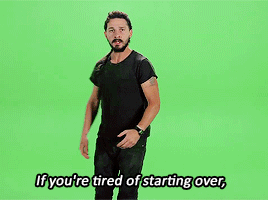

phonePhone Numbers
If you feel that you are in need of any sort of assistance,
you can refer to one of these hotlines for help.
Suicide Prevention Lifeline
We can all help prevent suicide. The Lifeline provides 24/7,
free and confidential support for people in distress, prevention and crisis
resources for you or your loved ones, and best practices
for professionals.
phone 1-800-273-8255
Crisis Hotline
Crisis Call Center’s 24-hour crisis line often
serves as the first point of contact for individuals who are seeking
help, support, and information. Crisis can affect anyone at any time.
The need for emotional support or referral assistance is something most
individuals encounter at some point in their lives.
phone 775-784-8090
Crisis Text Line
Free, 24/7 support for people in crisis. Every texter
is connected with a Crisis Counselor, a real-life human being trained to
bring texters from a hot moment to a cool calm through active listening
and collaborative problem solving. All of our Crisis Counselors are volunteers,
donating their time to helping people in crisis.
message 741741
Kate's phone-number
phone 555-555-1234
{{ this.title }}
This is a breathing exercise for when you are feeling stressed out. Breathe in as the image is building and out as the image shrinks.
